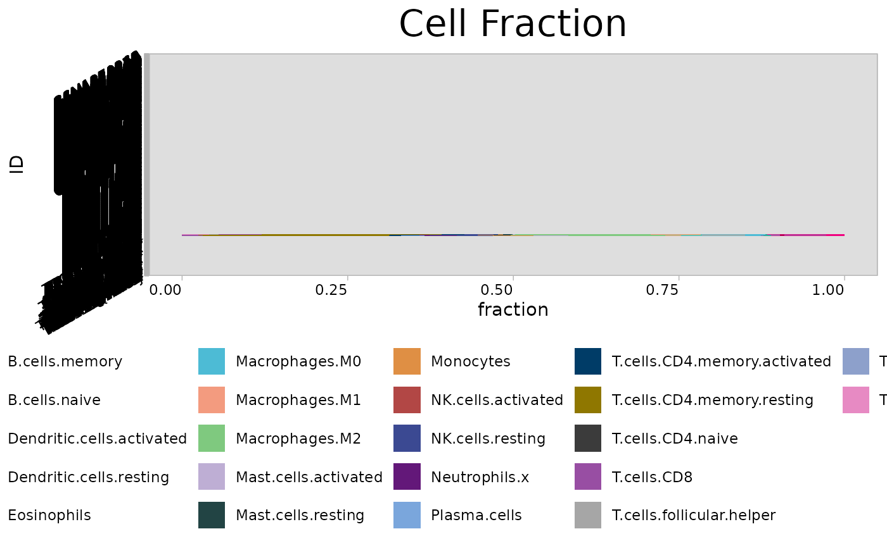

Creates stacked bar charts to visualize tumor microenvironment (TME) cell fractions. Supports batch visualization of deconvolution results from methods such as CIBERSORT, EPIC, and quanTIseq.
Usage
cell_bar_plot(
input,
id = "ID",
title = "Cell Fraction",
features = NULL,
pattern = NULL,
legend.position = "bottom",
coord_flip = TRUE,
palette = 3,
show_col = FALSE,
cols = NULL
)Arguments
- input
Data frame containing deconvolution results.
- id
Character string specifying the column name containing sample identifiers. Default is "ID".
- title
Character string specifying the plot title. Default is "Cell Fraction".
- features
Character vector specifying column names representing cell types to plot. If NULL, columns are selected based on `pattern`. Default is NULL.
- pattern
Character string or regular expression to match column names for automatic feature selection. Used when `features` is NULL. Default is NULL.
- legend.position
Character string specifying legend position ("bottom", "top", "left", "right"). Default is "bottom".
- coord_flip
Logical indicating whether to flip plot coordinates using `coord_flip()`. Default is TRUE.
- palette
Integer specifying the color palette to use. Default is 3.
- show_col
Logical indicating whether to display color information. Default is FALSE.
- cols
Character vector of custom colors. If NULL, palette is used. Default is NULL.
Examples
# \donttest{
sig_stad <- load_data("sig_stad")
cell_bar_plot(
input = sig_stad[1:20, ],
id = "ID",
features = colnames(sig_stad)[25:46]
)
#> ℹ Available categories: box, continue2, continue, random, heatmap, heatmap3, tidyheatmap
#> ℹ Random palettes: 1 (palette1), 2 (palette2), 3 (palette3), 4 (palette4)


# }